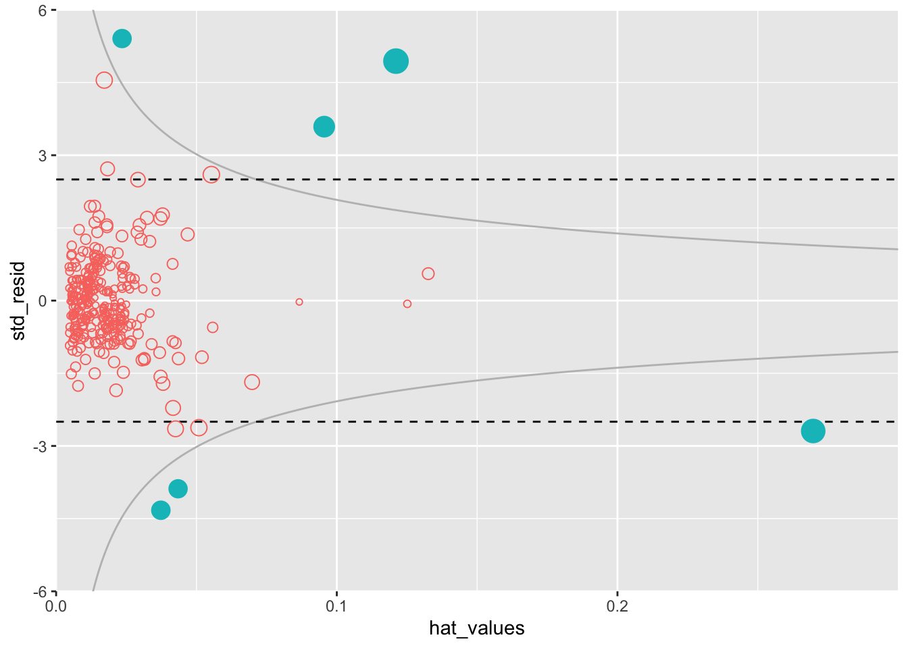
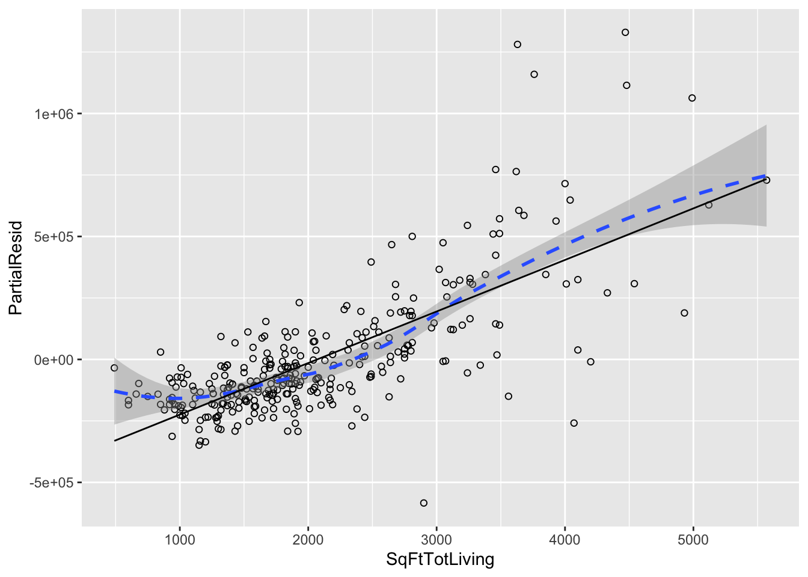
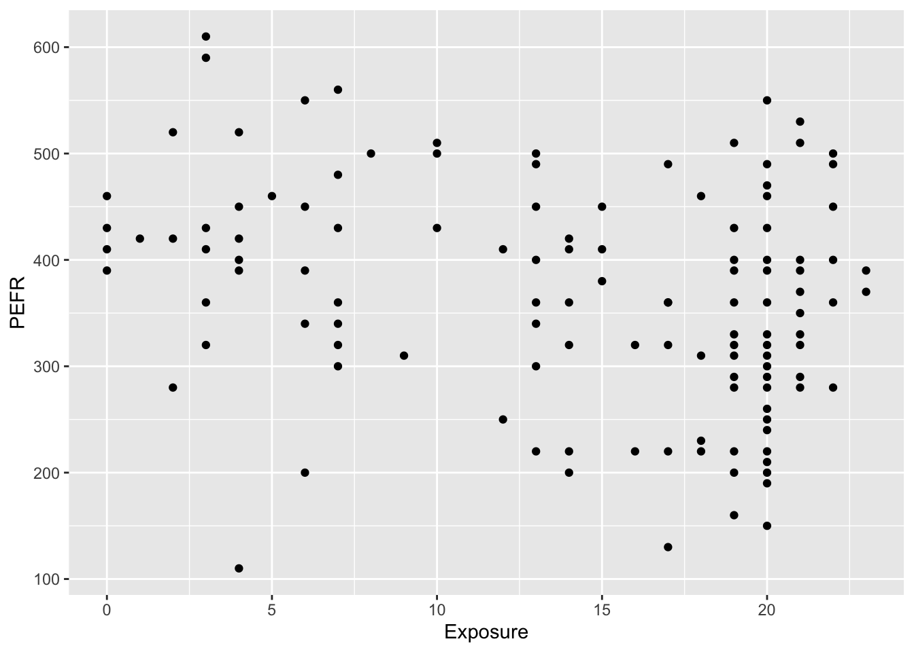
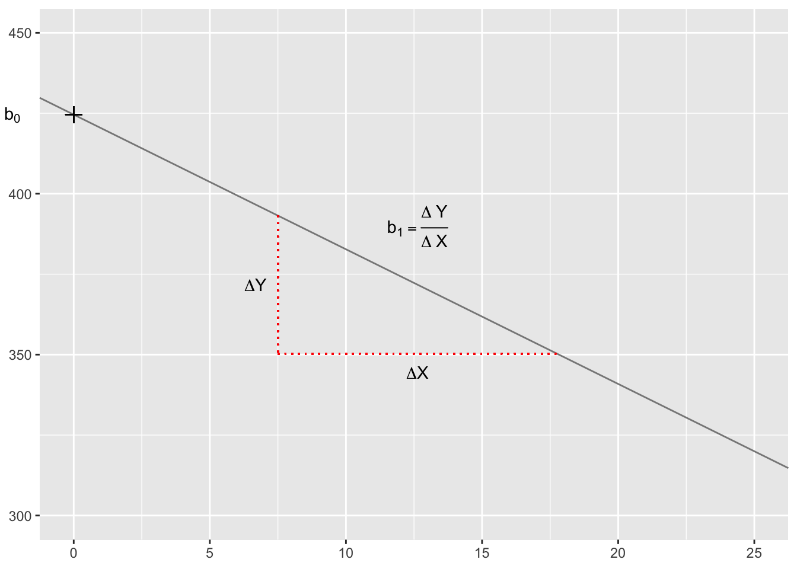
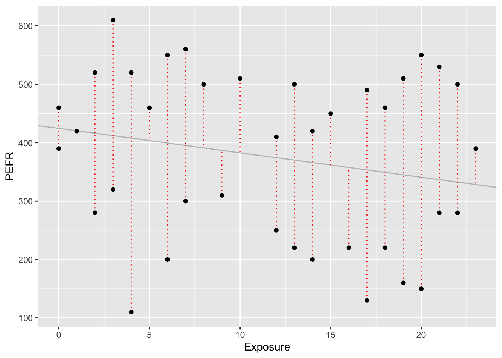
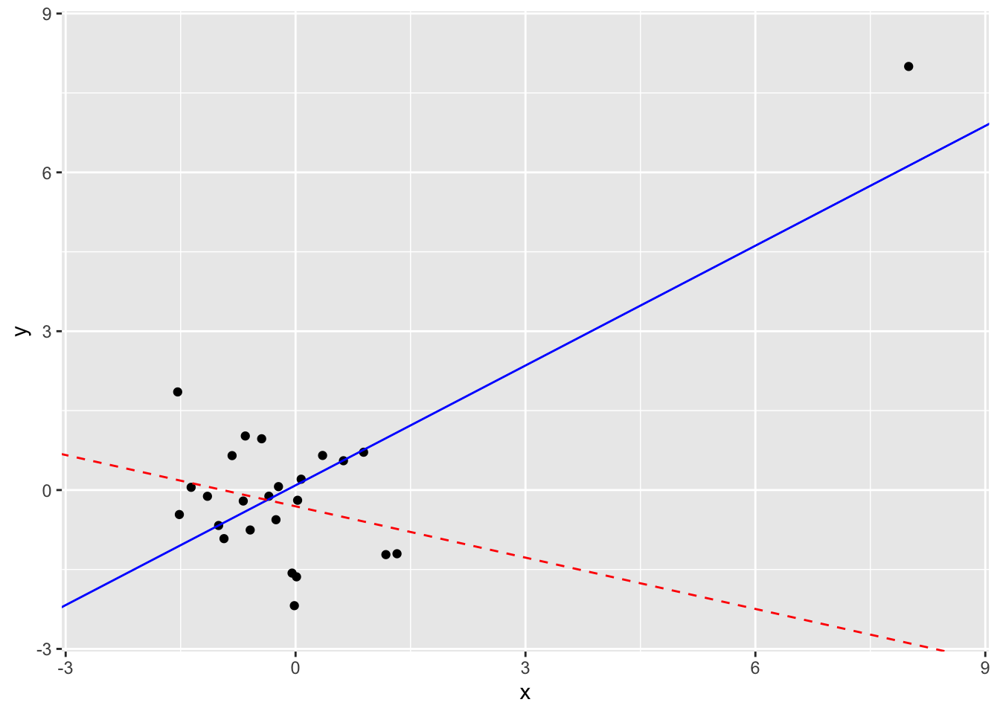
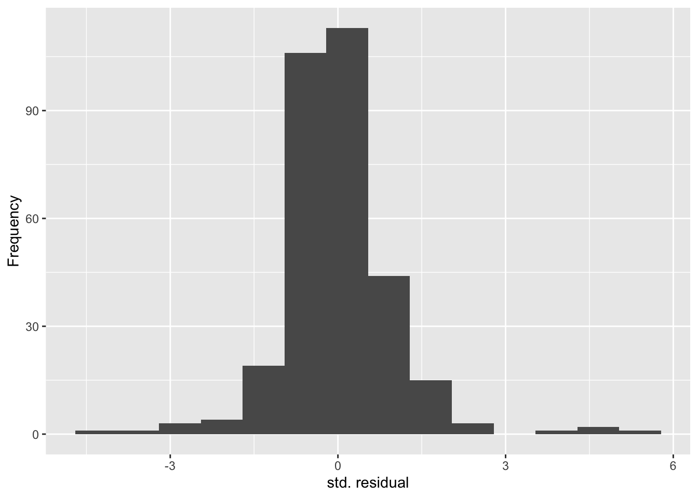
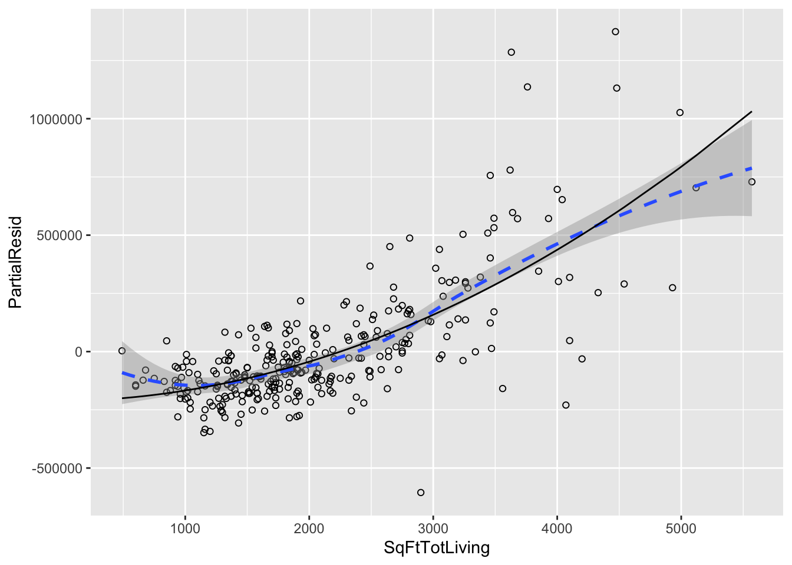
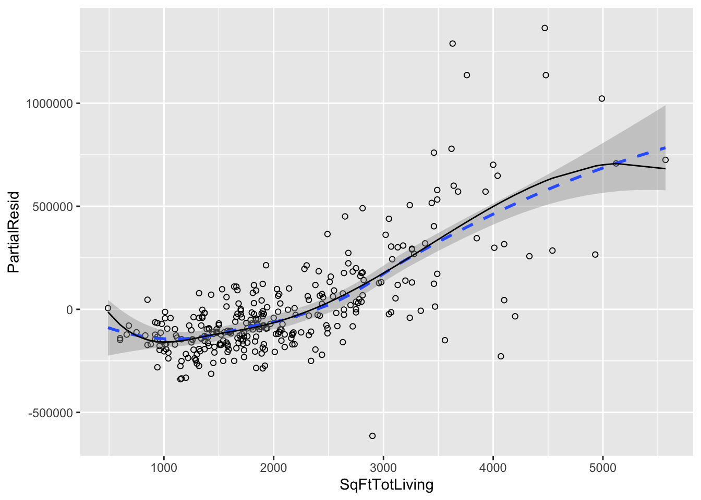

library(MASS)
library(latex2exp)
library(lubridate)
library(mgcv)
library(splines)
library(tidyverse)
set.seed(123)
# Location of the data files. Adjust this path if you keep the data
# files in a different directory.
DATA_DIR <- '../data'Chapter 4: Regression and Prediction
Regression and Prediction
Simple Linear Regression
The Regression Equation
lung <- read_csv(file.path(DATA_DIR, "LungDisease.csv"))Rows: 122 Columns: 2
── Column specification ────────────────────────────────────────────────────────
Delimiter: ","
dbl (2): PEFR, Exposure
ℹ Use `spec()` to retrieve the full column specification for this data.
ℹ Specify the column types or set `show_col_types = FALSE` to quiet this message.model <- lm(PEFR ~ Exposure, data = lung)PEFR ~ Exposure - 1PEFR ~ Exposure - 1model
Call:
lm(formula = PEFR ~ Exposure, data = lung)
Coefficients:
(Intercept) Exposure
424.583 -4.185 Fitted Values and Residuals
fitted <- predict(model)
resid <- residuals(model)Multiple Linear Regression
Example: King County Housing Data
house <- read_csv(file.path(DATA_DIR, "house_sales.csv"), show_col_types = FALSE)
head(house[, c("AdjSalePrice", "SqFtTotLiving", "SqFtLot", "Bathrooms",
"Bedrooms", "BldgGrade")])# A tibble: 6 × 6
AdjSalePrice SqFtTotLiving SqFtLot Bathrooms Bedrooms BldgGrade
<dbl> <dbl> <dbl> <dbl> <dbl> <dbl>
1 300805 2400 9373 3 6 7
2 1076162 3764 20156 3.75 4 10
3 761805 2060 26036 1.75 4 8
4 442065 3200 8618 3.75 5 7
5 297065 1720 8620 1.75 4 7
6 411781 930 1012 1.5 2 8house_lm <- lm(AdjSalePrice ~ SqFtTotLiving + SqFtLot + Bathrooms +
Bedrooms + BldgGrade,
data = house, na.action = na.omit)house_lm
Call:
lm(formula = AdjSalePrice ~ SqFtTotLiving + SqFtLot + Bathrooms +
Bedrooms + BldgGrade, data = house, na.action = na.omit)
Coefficients:
(Intercept) SqFtTotLiving SqFtLot Bathrooms Bedrooms
-5.219e+05 2.288e+02 -6.047e-02 -1.944e+04 -4.777e+04
BldgGrade
1.061e+05 Assessing the Model
summary(house_lm)
Call:
lm(formula = AdjSalePrice ~ SqFtTotLiving + SqFtLot + Bathrooms +
Bedrooms + BldgGrade, data = house, na.action = na.omit)
Residuals:
Min 1Q Median 3Q Max
-1199479 -118908 -20977 87435 9473035
Coefficients:
Estimate Std. Error t value Pr(>|t|)
(Intercept) -5.219e+05 1.565e+04 -33.342 < 2e-16 ***
SqFtTotLiving 2.288e+02 3.899e+00 58.694 < 2e-16 ***
SqFtLot -6.047e-02 6.118e-02 -0.988 0.323
Bathrooms -1.944e+04 3.625e+03 -5.363 8.27e-08 ***
Bedrooms -4.777e+04 2.490e+03 -19.187 < 2e-16 ***
BldgGrade 1.061e+05 2.396e+03 44.277 < 2e-16 ***
---
Signif. codes: 0 '***' 0.001 '**' 0.01 '*' 0.05 '.' 0.1 ' ' 1
Residual standard error: 261300 on 22681 degrees of freedom
Multiple R-squared: 0.5406, Adjusted R-squared: 0.5405
F-statistic: 5338 on 5 and 22681 DF, p-value: < 2.2e-16Model Selection and Stepwise Regression
house_full <- lm(AdjSalePrice ~ SqFtTotLiving + SqFtLot + Bathrooms +
Bedrooms + BldgGrade + PropertyType + NbrLivingUnits +
SqFtFinBasement + YrBuilt + YrRenovated + NewConstruction,
data = house, na.action = na.omit)step_lm <- stepAIC(house_full, direction = "both")Start: AIC=563145.4
AdjSalePrice ~ SqFtTotLiving + SqFtLot + Bathrooms + Bedrooms +
BldgGrade + PropertyType + NbrLivingUnits + SqFtFinBasement +
YrBuilt + YrRenovated + NewConstruction
Df Sum of Sq RSS AIC
- NbrLivingUnits 1 6.4007e+09 1.3662e+15 563144
- NewConstruction 1 1.0592e+10 1.3662e+15 563144
- YrRenovated 1 2.5069e+10 1.3662e+15 563144
- SqFtLot 1 1.0657e+11 1.3663e+15 563145
<none> 1.3662e+15 563145
- SqFtFinBasement 1 1.4030e+11 1.3663e+15 563146
- PropertyType 2 4.4207e+12 1.3706e+15 563215
- Bathrooms 1 7.6325e+12 1.3738e+15 563270
- Bedrooms 1 2.8212e+13 1.3944e+15 563607
- YrBuilt 1 1.2906e+14 1.4952e+15 565191
- SqFtTotLiving 1 1.3264e+14 1.4988e+15 565246
- BldgGrade 1 1.9050e+14 1.5567e+15 566105
Step: AIC=563143.6
AdjSalePrice ~ SqFtTotLiving + SqFtLot + Bathrooms + Bedrooms +
BldgGrade + PropertyType + SqFtFinBasement + YrBuilt + YrRenovated +
NewConstruction
Df Sum of Sq RSS AIC
- NewConstruction 1 1.0801e+10 1.3662e+15 563142
- YrRenovated 1 2.5628e+10 1.3662e+15 563142
- SqFtLot 1 1.0731e+11 1.3663e+15 563143
<none> 1.3662e+15 563144
- SqFtFinBasement 1 1.3828e+11 1.3663e+15 563144
+ NbrLivingUnits 1 6.4007e+09 1.3662e+15 563145
- PropertyType 2 4.4301e+12 1.3706e+15 563213
- Bathrooms 1 7.7500e+12 1.3739e+15 563270
- Bedrooms 1 2.8273e+13 1.3944e+15 563606
- YrBuilt 1 1.3013e+14 1.4963e+15 565206
- SqFtTotLiving 1 1.3288e+14 1.4990e+15 565247
- BldgGrade 1 1.9177e+14 1.5579e+15 566122
Step: AIC=563141.7
AdjSalePrice ~ SqFtTotLiving + SqFtLot + Bathrooms + Bedrooms +
BldgGrade + PropertyType + SqFtFinBasement + YrBuilt + YrRenovated
Df Sum of Sq RSS AIC
- YrRenovated 1 2.5893e+10 1.3662e+15 563140
- SqFtLot 1 1.1494e+11 1.3663e+15 563142
<none> 1.3662e+15 563142
- SqFtFinBasement 1 1.4534e+11 1.3663e+15 563142
+ NewConstruction 1 1.0801e+10 1.3662e+15 563144
+ NbrLivingUnits 1 6.6093e+09 1.3662e+15 563144
- PropertyType 2 4.5301e+12 1.3707e+15 563213
- Bathrooms 1 7.7487e+12 1.3739e+15 563268
- Bedrooms 1 2.8269e+13 1.3945e+15 563604
- SqFtTotLiving 1 1.3390e+14 1.5001e+15 565261
- YrBuilt 1 1.3760e+14 1.5038e+15 565317
- BldgGrade 1 1.9244e+14 1.5586e+15 566129
Step: AIC=563140.2
AdjSalePrice ~ SqFtTotLiving + SqFtLot + Bathrooms + Bedrooms +
BldgGrade + PropertyType + SqFtFinBasement + YrBuilt
Df Sum of Sq RSS AIC
- SqFtLot 1 1.1425e+11 1.3663e+15 563140
<none> 1.3662e+15 563140
- SqFtFinBasement 1 1.4999e+11 1.3664e+15 563141
+ YrRenovated 1 2.5893e+10 1.3662e+15 563142
+ NewConstruction 1 1.1065e+10 1.3662e+15 563142
+ NbrLivingUnits 1 7.1825e+09 1.3662e+15 563142
- PropertyType 2 4.5076e+12 1.3707e+15 563211
- Bathrooms 1 7.7790e+12 1.3740e+15 563267
- Bedrooms 1 2.8251e+13 1.3945e+15 563603
- SqFtTotLiving 1 1.3388e+14 1.5001e+15 565259
- YrBuilt 1 1.5091e+14 1.5171e+15 565515
- BldgGrade 1 1.9244e+14 1.5587e+15 566128
Step: AIC=563140.1
AdjSalePrice ~ SqFtTotLiving + Bathrooms + Bedrooms + BldgGrade +
PropertyType + SqFtFinBasement + YrBuilt
Df Sum of Sq RSS AIC
<none> 1.3663e+15 563140
+ SqFtLot 1 1.1425e+11 1.3662e+15 563140
- SqFtFinBasement 1 1.4116e+11 1.3665e+15 563140
+ YrRenovated 1 2.5199e+10 1.3663e+15 563142
+ NewConstruction 1 1.8750e+10 1.3663e+15 563142
+ NbrLivingUnits 1 8.0521e+09 1.3663e+15 563142
- PropertyType 2 4.4415e+12 1.3708e+15 563210
- Bathrooms 1 7.7109e+12 1.3740e+15 563266
- Bedrooms 1 2.8553e+13 1.3949e+15 563607
- SqFtTotLiving 1 1.3748e+14 1.5038e+15 565313
- YrBuilt 1 1.5080e+14 1.5171e+15 565513
- BldgGrade 1 1.9234e+14 1.5587e+15 566126step_lm
Call:
lm(formula = AdjSalePrice ~ SqFtTotLiving + Bathrooms + Bedrooms +
BldgGrade + PropertyType + SqFtFinBasement + YrBuilt, data = house,
na.action = na.omit)
Coefficients:
(Intercept) SqFtTotLiving
6.179e+06 1.993e+02
Bathrooms Bedrooms
4.240e+04 -5.195e+04
BldgGrade PropertyTypeSingle Family
1.372e+05 2.291e+04
PropertyTypeTownhouse SqFtFinBasement
8.448e+04 7.047e+00
YrBuilt
-3.565e+03 Weighted Regression
house$Year <- year(parse_date_time(house$DocumentDate, "m/d/y"))
house$Weight <- house$Year - 2005house_wt <- lm(AdjSalePrice ~ SqFtTotLiving + SqFtLot + Bathrooms +
Bedrooms + BldgGrade,
data = house, weight = Weight)
round(cbind(house_lm = house_lm$coefficients,
house_wt = house_wt$coefficients), digits = 3) house_lm house_wt
(Intercept) -521871.368 -584189.329
SqFtTotLiving 228.831 245.024
SqFtLot -0.060 -0.292
Bathrooms -19442.840 -26085.970
Bedrooms -47769.955 -53608.876
BldgGrade 106106.963 115242.435Factor Variables in Regression
Dummy Variables Representation
head(house[, "PropertyType"])# A tibble: 6 × 1
PropertyType
<chr>
1 Multiplex
2 Single Family
3 Single Family
4 Single Family
5 Single Family
6 Townhouse prop_type_dummies <- model.matrix(~ PropertyType - 1, data = house)
head(prop_type_dummies) PropertyTypeMultiplex PropertyTypeSingle Family PropertyTypeTownhouse
1 1 0 0
2 0 1 0
3 0 1 0
4 0 1 0
5 0 1 0
6 0 0 1lm(AdjSalePrice ~ SqFtTotLiving + SqFtLot + Bathrooms +
Bedrooms + BldgGrade + PropertyType, data = house)
Call:
lm(formula = AdjSalePrice ~ SqFtTotLiving + SqFtLot + Bathrooms +
Bedrooms + BldgGrade + PropertyType, data = house)
Coefficients:
(Intercept) SqFtTotLiving
-4.468e+05 2.234e+02
SqFtLot Bathrooms
-7.037e-02 -1.598e+04
Bedrooms BldgGrade
-5.089e+04 1.094e+05
PropertyTypeSingle Family PropertyTypeTownhouse
-8.468e+04 -1.151e+05 Factor Variables with Many Levels
table(house$ZipCode)
98001 98002 98003 98004 98005 98006 98007 98008 98010 98011 98014 98019 98022
358 180 241 293 133 460 112 291 56 163 85 242 188
98023 98024 98027 98028 98029 98030 98031 98032 98033 98034 98038 98039 98040
455 31 366 252 475 263 308 121 517 575 788 47 244
98042 98043 98045 98047 98050 98051 98052 98053 98055 98056 98057 98058 98059
641 1 222 48 7 32 614 499 332 402 4 420 513
98065 98068 98070 98072 98074 98075 98077 98092 98102 98103 98105 98106 98107
430 1 89 245 502 388 204 289 106 671 313 361 296
98108 98109 98112 98113 98115 98116 98117 98118 98119 98122 98125 98126 98133
155 149 357 1 620 364 619 492 260 380 409 473 465
98136 98144 98146 98148 98155 98166 98168 98177 98178 98188 98198 98199 98224
310 332 287 40 358 193 332 216 266 101 225 393 3
98288 98354
4 9 zip_groups <- house %>%
mutate(resid = residuals(house_lm)) %>%
group_by(ZipCode) %>%
summarize(med_resid = median(resid), cnt = n()) %>%
arrange(med_resid) %>%
mutate(
cum_cnt = cumsum(cnt),
ZipGroup = ntile(cum_cnt, 5),
) %>%
select(ZipCode, ZipGroup)
house <- house %>%
left_join(zip_groups, by = "ZipCode") %>%
mutate(ZipGroup = as.factor(ZipGroup))table(zip_groups[c("ZipGroup")])ZipGroup
1 2 3 4 5
16 16 16 16 16 Interpreting the Regression Equation
Confounding Variables
lm(AdjSalePrice ~ SqFtTotLiving + SqFtLot + Bathrooms +
Bedrooms + BldgGrade + PropertyType + ZipGroup, data = house,
na.action = na.omit)
Call:
lm(formula = AdjSalePrice ~ SqFtTotLiving + SqFtLot + Bathrooms +
Bedrooms + BldgGrade + PropertyType + ZipGroup, data = house,
na.action = na.omit)
Coefficients:
(Intercept) SqFtTotLiving
-6.666e+05 2.106e+02
SqFtLot Bathrooms
4.550e-01 5.928e+03
Bedrooms BldgGrade
-4.168e+04 9.854e+04
PropertyTypeSingle Family PropertyTypeTownhouse
1.932e+04 -7.820e+04
ZipGroup2 ZipGroup3
5.332e+04 1.163e+05
ZipGroup4 ZipGroup5
1.784e+05 3.384e+05 Interactions and Main Effects
lm(formula = AdjSalePrice ~ SqFtTotLiving * ZipGroup + SqFtLot +
Bathrooms + Bedrooms + BldgGrade + PropertyType, data = house,
na.action = na.omit)
Call:
lm(formula = AdjSalePrice ~ SqFtTotLiving * ZipGroup + SqFtLot +
Bathrooms + Bedrooms + BldgGrade + PropertyType, data = house,
na.action = na.omit)
Coefficients:
(Intercept) SqFtTotLiving
-4.853e+05 1.148e+02
ZipGroup2 ZipGroup3
-1.113e+04 2.032e+04
ZipGroup4 ZipGroup5
2.050e+04 -1.499e+05
SqFtLot Bathrooms
6.869e-01 -3.619e+03
Bedrooms BldgGrade
-4.180e+04 1.047e+05
PropertyTypeSingle Family PropertyTypeTownhouse
1.357e+04 -5.884e+04
SqFtTotLiving:ZipGroup2 SqFtTotLiving:ZipGroup3
3.260e+01 4.178e+01
SqFtTotLiving:ZipGroup4 SqFtTotLiving:ZipGroup5
6.934e+01 2.267e+02 Regression Diagnostics
Outliers
house_98105 <- house %>% filter(ZipCode == 98105)
lm_98105 <- lm(AdjSalePrice ~ SqFtTotLiving + SqFtLot + Bathrooms +
Bedrooms + BldgGrade, data = house_98105)sresid <- rstandard(lm_98105)
idx <- order(sresid)
sresid[idx[1]] 259
-4.326732 house_98105[idx[1], c("AdjSalePrice", "SqFtTotLiving", "SqFtLot",
"Bathrooms", "Bedrooms", "BldgGrade")]# A tibble: 1 × 6
AdjSalePrice SqFtTotLiving SqFtLot Bathrooms Bedrooms BldgGrade
<dbl> <dbl> <dbl> <dbl> <dbl> <dbl>
1 119748 2900 7276 3 6 7Influential Values
df_influential <- tibble(
std_resid = rstandard(lm_98105),
cooks_d = cooks.distance(lm_98105),
hat_values = hatvalues(lm_98105),
)
p <- 6 # Number of model parameters (e.g., intercept + 2 predictors)
D_i <- 0.08 # Target Cook's Distance
cooks_curve_data <- tibble(
t = seq(-10, 10, length.out = 1000),
cooks_d = 0.08,
) %>%
mutate(
hat_values = 1 / (1 + t^2),
std_resid = sqrt(D_i * p) * t
)
ggplot(df_influential, aes(x = hat_values, y = std_resid,
color = cooks_d > 0.08, shape = cooks_d > 0.08)) +
geom_path(aes(size = NULL, color = NULL, shape = NULL),
data = cooks_curve_data, color = "grey", linewidth = 0.5) +
geom_hline(yintercept = c(-2.5, 2.5), linetype = 2) +
geom_point(aes(size = 10 * sqrt(cooks_d))) +
scale_shape_manual(values = c(1, 19)) +
guides(color = "none", shape = "none", size = "none") +
coord_cartesian(xlim = c(0, 0.3), ylim = c(-6, 6), expand = FALSE)
Partial Residual Plots and Nonlinearity
terms <- predict(lm_98105, type = "terms")
partial_resid <- resid(lm_98105) + termsdf <- data.frame(SqFtTotLiving = house_98105[, "SqFtTotLiving"],
Terms = terms[, "SqFtTotLiving"],
PartialResid = partial_resid[, "SqFtTotLiving"])
ggplot(df, aes(SqFtTotLiving, PartialResid)) +
geom_point(shape = 1) +
scale_shape(solid = FALSE) +
geom_smooth(linetype = 2) +
geom_line(aes(SqFtTotLiving, Terms))`geom_smooth()` using method = 'loess' and formula = 'y ~ x'
Polynomial and Spline Regression
Polynomial
lm_poly <- lm(AdjSalePrice ~ poly(SqFtTotLiving, 2) + SqFtLot +
BldgGrade + Bathrooms + Bedrooms, data = house_98105)
lm_poly
Call:
lm(formula = AdjSalePrice ~ poly(SqFtTotLiving, 2) + SqFtLot +
BldgGrade + Bathrooms + Bedrooms, data = house_98105)
Coefficients:
(Intercept) poly(SqFtTotLiving, 2)1 poly(SqFtTotLiving, 2)2
-402530.47 3271519.49 776934.02
SqFtLot BldgGrade Bathrooms
32.56 135717.06 -1435.12
Bedrooms
-9191.94 Splines
knots <- quantile(house_98105$SqFtTotLiving, p = c(0.25, 0.5, 0.75))
lm_spline <- lm(AdjSalePrice ~ bs(SqFtTotLiving, knots = knots, degree = 3) +
SqFtLot + Bathrooms + Bedrooms + BldgGrade,
data = house_98105)
lm_spline
Call:
lm(formula = AdjSalePrice ~ bs(SqFtTotLiving, knots = knots,
degree = 3) + SqFtLot + Bathrooms + Bedrooms + BldgGrade,
data = house_98105)
Coefficients:
(Intercept)
-414157.61
bs(SqFtTotLiving, knots = knots, degree = 3)1
-199529.76
bs(SqFtTotLiving, knots = knots, degree = 3)2
-120580.64
bs(SqFtTotLiving, knots = knots, degree = 3)3
-71644.39
bs(SqFtTotLiving, knots = knots, degree = 3)4
195677.89
bs(SqFtTotLiving, knots = knots, degree = 3)5
845244.25
bs(SqFtTotLiving, knots = knots, degree = 3)6
695545.67
SqFtLot
33.33
Bathrooms
-4778.21
Bedrooms
-5778.70
BldgGrade
134462.37 Generalized Additive Models
lm_gam <- gam(AdjSalePrice ~ s(SqFtTotLiving) + SqFtLot +
Bathrooms + Bedrooms + BldgGrade, data = house_98105)
lm_gam
Family: gaussian
Link function: identity
Formula:
AdjSalePrice ~ s(SqFtTotLiving) + SqFtLot + Bathrooms + Bedrooms +
BldgGrade
Estimated degrees of freedom:
4.49 total = 9.49
GCV score: 30148051324 Supplementary Material
Figure 4-1. Cotton exposure versus lung capacity
lung <- read_csv(file.path(DATA_DIR, "LungDisease.csv"), show_col_types = FALSE)
ggplot(lung, aes(x = Exposure, y = PEFR)) +
geom_point()
Figure 4-2. Slope and intercept for the regression fit to the lung data
model <- lm(PEFR ~ Exposure, data = lung)
x <- c(7.5, 17.75)
y <- predict(model, newdata = data.frame(Exposure = x))
ggplot(lung, aes(x = Exposure, y = PEFR)) +
geom_abline(intercept = model$coefficients[1], slope = model$coefficients[2],
color = "#888888") +
coord_cartesian(xlim = c(0, 25), ylim = c(300, 450), clip = "off") +
geom_point(x = 0, y = model$coefficients[1], shape = 3, size = 3) +
annotate("text", -2.25, model$coefficients[1], label = TeX("$b_0$")) +
geom_segment(x = x[1], y = y[2], xend = x[2], yend = y[2],
color = "red", linetype = 3) +
geom_segment(x = x[1], y = y[1], xend = x[1], yend = y[2],
color = "red", linetype = 3) +
annotate("text", x = x[1], y = mean(y), label = TeX("$Delta Y$"),
hjust = 1.5) +
annotate("text", x = mean(x), y = y[2], label = TeX("$Delta X$"),
vjust = 2) +
annotate("text", x = mean(x), y = 390, label = TeX("$b_1 = \\frac{Delta~Y}{Delta~X}$"))
Figure 4-3. Residuals for the regression fit to the lung data
fitted <- predict(model)
resid <- residuals(model)
lung1 <- lung %>%
mutate(
Fitted = fitted,
positive = PEFR > Fitted,
) %>%
group_by(Exposure, positive) %>%
summarize(
PEFR_max = max(PEFR),
PEFR_min = min(PEFR),
Fitted = first(Fitted),
.groups = "keep",
) %>%
ungroup() %>%
mutate(PEFR = ifelse(positive, PEFR_max, PEFR_min)) %>%
arrange(Exposure)
ggplot(lung1, aes(x = Exposure, y = PEFR, xend = Exposure, yend = Fitted)) +
geom_abline(intercept = model$coefficients[1], slope = model$coefficients[2],
color = "grey") +
geom_segment(linetype = 3, color = "red") +
geom_point()
Figure 4-5. An example of an influential data point in regression
seed <- 11
set.seed(seed)
df <- tibble(
x = rnorm(25),
y = - x / 5 + rnorm(25)
)
df$x[1] <- 8
df$y[1] <- 8
model1 <- lm(y ~ x, data = df)
model2 <- lm(y[-1] ~ x[-1], data = df)
g <- ggplot(df, aes(x = x, y = y)) +
geom_point() +
coord_cartesian(xlim = c(-2.5, 8.5), ylim = c(-2.5, 8.5)) +
geom_abline(intercept = model1$coefficients[1], slope = model1$coefficients[2],
col = "blue") +
geom_abline(intercept = model2$coefficients[1], slope = model2$coefficients[2],
col = "red", linetype = 2)
g
Figure 4-8. A histogram of the residuals from the regression of the housing data
ggplot(tibble(x = df_influential$std_resid), aes(x = x)) +
geom_histogram(bins = 14) +
labs(x = "std. residual", y = "Frequency")
Figure 4-10. A polynomial regression fit for the variable SqFtTotLiving
(solid line) versus a smooth (dashed line; see the following section about splines)
terms <- predict(lm_poly, type = "terms")
partial_resid <- resid(lm_poly) + terms
df <- data.frame(SqFtTotLiving = house_98105[, "SqFtTotLiving"],
Terms = terms[, 1],
PartialResid = partial_resid[, 1])
graph <- ggplot(df, aes(SqFtTotLiving, PartialResid)) +
geom_point(shape = 1) +
scale_shape(solid = FALSE) +
geom_smooth(linetype = 2, formula = y ~ x, method = "loess") +
geom_line(aes(SqFtTotLiving, Terms)) +
scale_y_continuous(labels = function(x) format(x, scientific = FALSE))
graph
Figure 4-12. A spline regression fit for the variable SqFtTotLiving (solid line) compared to a smooth (dashed line)
terms1 <- predict(lm_spline, type = "terms")
partial_resid1 <- resid(lm_spline) + terms1
df1 <- data.frame(SqFtTotLiving = house_98105[, "SqFtTotLiving"],
Terms = terms1[, 1],
PartialResid = partial_resid1[, 1])
graph <- ggplot(df1, aes(SqFtTotLiving, PartialResid)) +
geom_point(shape = 1) +
scale_shape(solid = FALSE) +
geom_smooth(linetype = 2, formula = y ~ x, method = "loess") +
geom_line(aes(SqFtTotLiving, Terms)) +
scale_y_continuous(labels = function(x) format(x, scientific = FALSE))
graph
Figure 4-13. A GAM regression fit for the variable SqFtTotLiving (solid line) compared to a smooth (dashed line)
terms <- predict.gam(lm_gam, type = "terms")
partial_resid <- resid(lm_gam) + terms
df <- data.frame(SqFtTotLiving = house_98105[, "SqFtTotLiving"],
Terms = terms[, 5],
PartialResid = partial_resid[, 5])
graph <- ggplot(df, aes(SqFtTotLiving, PartialResid)) +
geom_point(shape = 1) +
scale_shape(solid = FALSE) +
geom_smooth(linetype = 2, formula = y ~ x, method = "loess") +
geom_line(aes(SqFtTotLiving, Terms)) +
scale_y_continuous(labels = function(x) format(x, scientific = FALSE))
graph